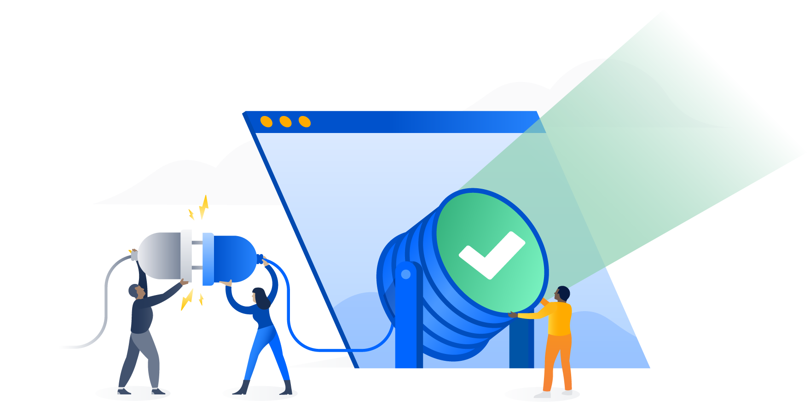

Bootstrap Atlaskit is an awesome UI Kit built according to the Atlassian Design Guidelines.
Bootstrap Library
Check out the documentation and usage guides for the Bootstrap library.

Atlassian Design Guidelines
Check out the documentation and usage guides for the Atlaskit packages.
Work smarter, better, and faster with Bootstrap Atlaskit.
Get started now